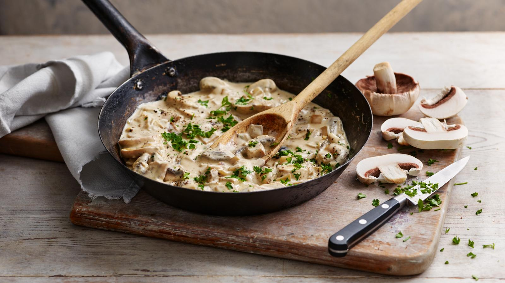

Creamy mushroom sauce

Description
An easy and versatile creamy mushroom sauce that pairs incredibly well with a fillet steak
Ingredients
- 15g/½oz butter
- 225g/8oz button mushrooms, wiped and sliced
- 150ml/5fl oz dry white wine
- 150ml/5fl oz crème fraîche
Steps
- Heat the oil and butter in a frying pan and add the onion. Cook the onion until softened but not coloured.
- Add the garlic and the mushrooms and cook for 3–4 minutes until the mushrooms are soft but have not released their juices.
- Add the wine and reduce the volume of liquid by half.
- Stir in the crème fraîche and parsley and heat through. Season to taste and serve.